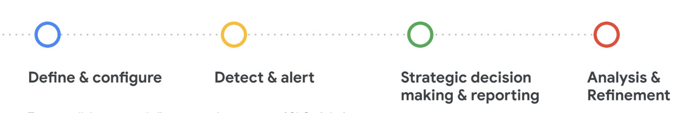
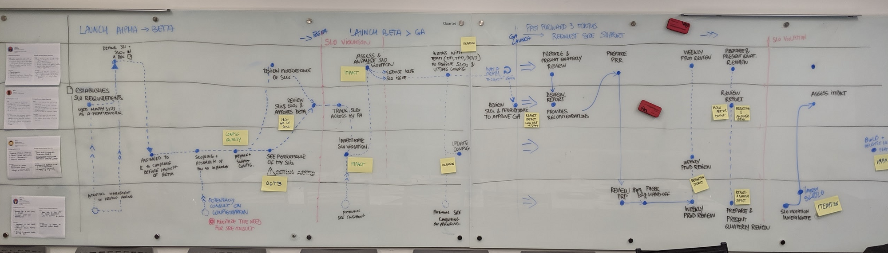
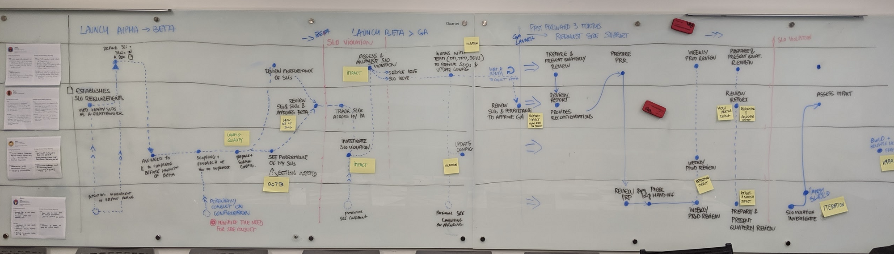
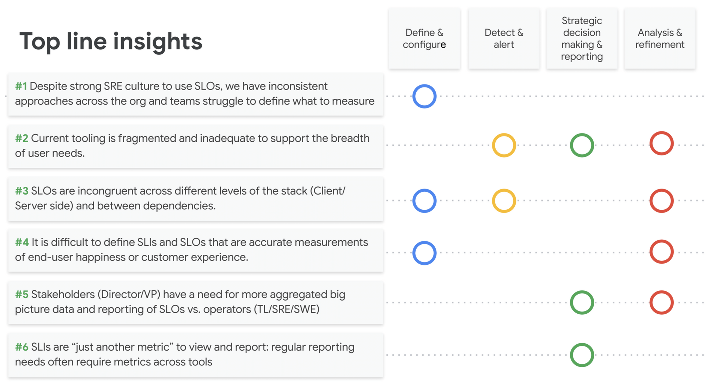
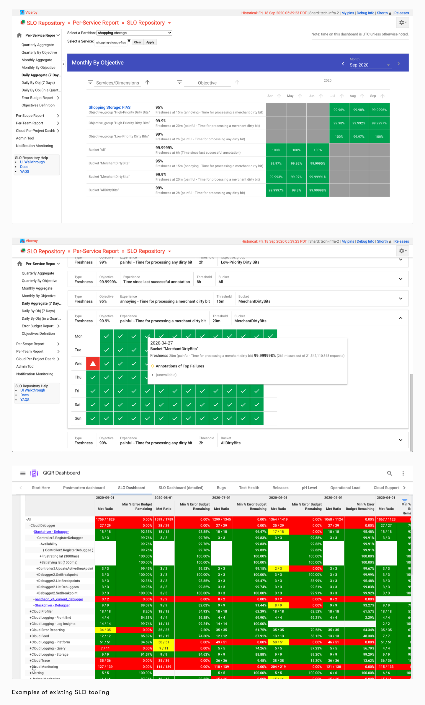
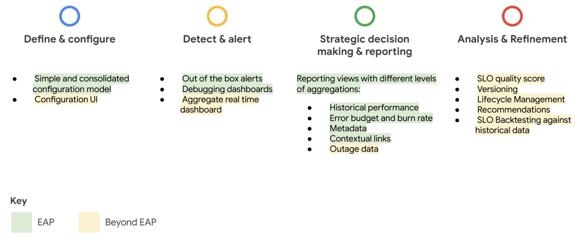
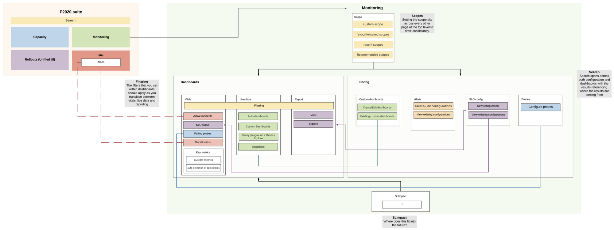
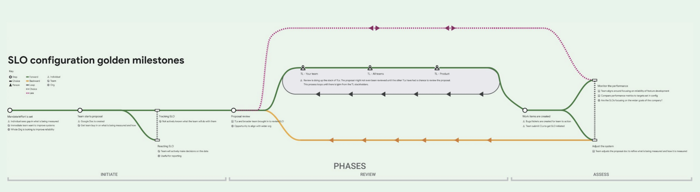
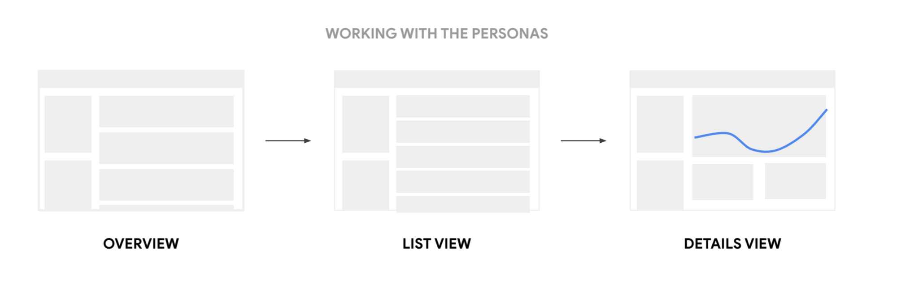
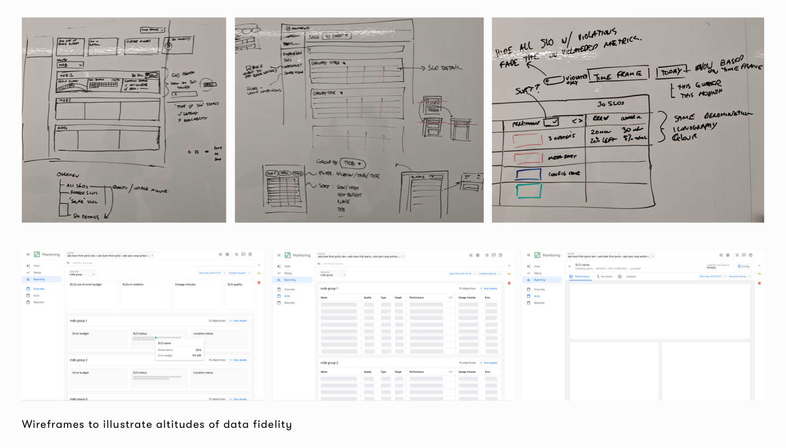

SLO stands for Service Level Objective and is a way to measure the performance of a service. These measurements give insights into what areas of the service need to be focused on (reliability or functionality) and provide a window into the customers experience of using the service.
While working at Google within an internal tooling organization, I was asked to look into improving the landscape of how SLOs were created, interrupted and measured at Google.
I worked as a solo designer, working closely with the product owner and the engineering lead to understand the current landscape, create development strategy and refresh the experience.
This initiative was kicked off by a one week sprint with the core stakeholders with daily read outs to the wider team. We explored the north start experience and areas of focus to align a roadmap.
 

The team surveyed over 300 people (spanning software engineers, site reliability engineers and key stakeholders) to understand satisfaction across all user journeys related to working with SLOs. Here are the top issues related to the four phases of working with SLOs:
The existing landscape is filled with products which directly plays a hand in the fragmentation of the SLO experience at Google. Each product is homegrown and built on legacy software which makes updating them a challenge.
Below are screenshots from the most popular SLO management tools. Their shortcomings primarily come from legacy that has built up from many engineers working to many different SLO mandates over many years. Two core friction points are traversing the information and filtering to the data to get to what is most relevant as well as the visual style that hasn't kept up with Google's design language.
Based on the satellite products that exist and their cross functionality, the list of functionality to reach parity was created and grouped by the core areas of dealing with SLOs. The team then chose where we felt we could make the most impact for our EAP. This was in an effort to ensure SLO Repo gracefully evolved into the next generation SLO tool.
This solution is a part of a much wider suite of tools (P2020) and because of the nature of dealing with SLOs, there are a lot of touch points to those other suites. Mapping out where SLO repo fit into not only the Monitoring world, but also the wider universe helped place journeys that left SLO repo into context.
   
As the lead designer, I was heavily involved with all aspects of the product from research to visual design. However, this work was a collaborative effort with the talent of Diane Faidy, Kevin Miller, Akhilesh Pant and the entire engineering team.